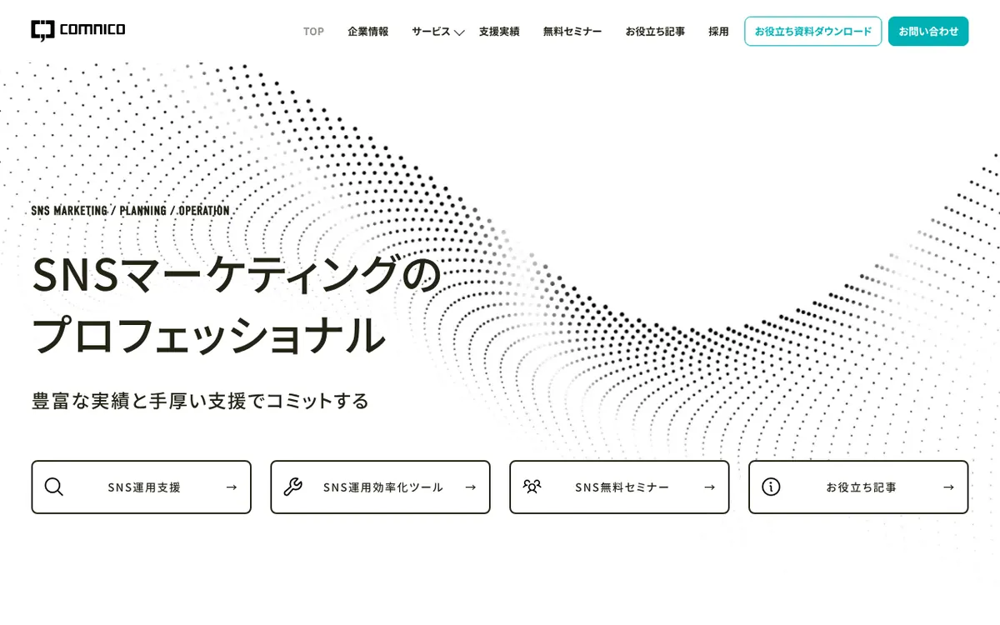
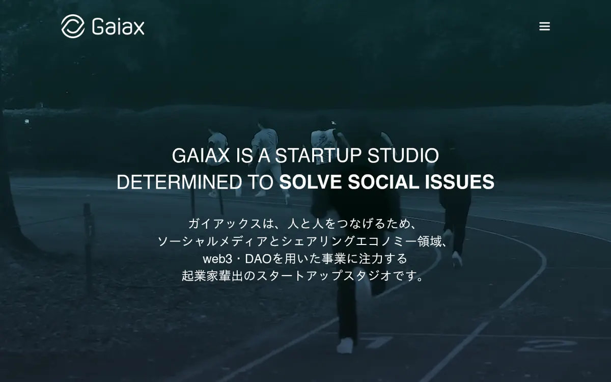
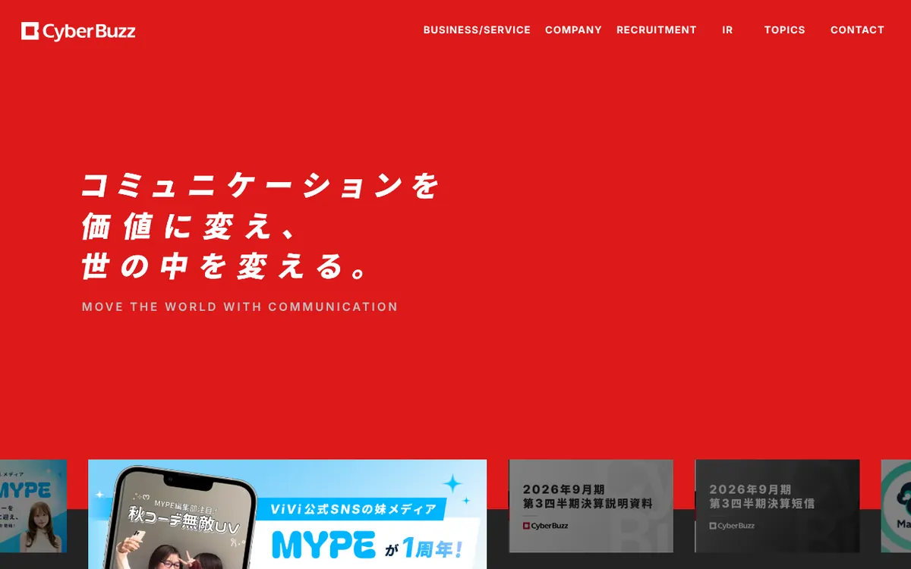
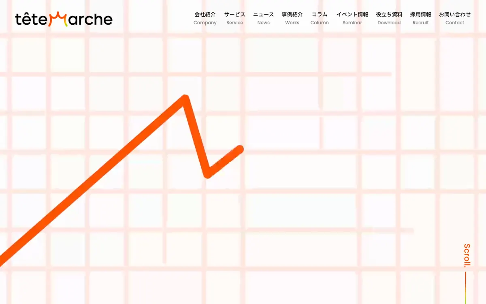
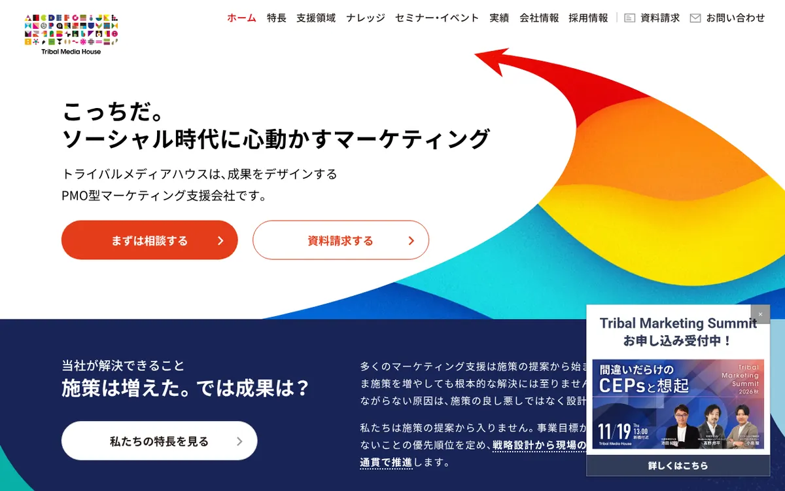

この記事でわかること
- SNS運用代行おすすめ6社の比較表（対応SNS・料金・契約期間・所在地）
- 6社それぞれの特徴・向いているケース・注意点（公式サイトのリンク付き）
- 料金・契約期間が公式ページに載っているかの一覧と、問い合わせで聞くべきこと
- 運用代行・コンサル・ツールなど依頼タイプの違い
- 契約期間・解約・アカウントや素材の引き継ぎで確認する4点
- 依頼前に確認する7項目と、自社の状況別の選び方
SNS運用代行とは？依頼できることと、依頼できないこと
SNS運用代行は、企業の公式アカウントの戦略設計・投稿の企画と制作・投稿・コメント対応・分析レポートを外部に任せるサービスです。ただし会社によって「どこまで」が大きく違います。投稿の代行だけの会社もあれば、戦略とレポートだけで制作は含まない会社もあり、キャンペーンやインフルエンサー施策まで束ねる会社もあります。
この違いを見落とすと、「頼んだのに投稿を作ってくれない」「月額が安いと思ったら分析が別料金だった」というズレが起きます。今回の比較でも、金額の大小より先に「何が含まれ、何が含まれないか」と「それが公式ページで確認できるか」を軸に整理しました。
| 依頼のタイプ | 任せられること | 任せにくいこと |
|---|---|---|
| 運用代行（企画から投稿まで） | 戦略、投稿企画、制作、投稿、コメント対応、レポート | 商品やサービスそのものの改善、社内の判断の代替 |
| コンサルティング（制作は含まない） | 戦略、投稿の企画方針、分析レポート、改善提案 | 日々の制作と投稿（社内か別会社で実施） |
| キャンペーン・インフルエンサー施策 | 企画設計、拡散設計、起用の手配 | 通常投稿の継続運用 |
| ツール提供 | 投稿予約、承認フロー、数値分析 | 運用の中身（誰が何を投稿するか） |
メリットは、投稿の質と頻度を安定させやすいこと、担当者の工数を減らせること、分析や炎上リスクの確認を第三者の目で入れられることです。デメリットは、費用が毎月かかること、ノウハウが社内に残りにくいこと、自社の商品理解が浅いと投稿が「それっぽいだけ」になりやすいことです。内製と外注の判断はSNS運用の内製と外注｜工数・人件費で比較する基準で、会社選びの全体像はSNS運用代行会社の選び方｜契約前に確認する8項目と、見積もりで見るべき業務範囲で整理しています。この記事では「依頼先を絞る段階」に特化して進めます。
SNS運用代行おすすめ6社の比較表
ここからは、SNS運用の支援を公式サイトで案内している5社と当社を並べます。掲載しているのは、2026年10月12日時点で各社の公式ページを実際に開いて確認できた内容だけです。公式ページに書かれていない項目は「公開なし」「記載なし」と書き、推測では埋めていません。順位は付けていません。掲載順は、SNS運用代行の料金例を公開している会社を先頭に置き、以降は社名の五十音順です。当社は先頭に置いています。
比較の前に。SNS運用代行は、料金を公式サイトに載せていない会社が多数派です。今回確認した5社でも、金額を公開していたのは1社だけでした。「公開なし」は不誠実という意味ではなく、案件ごとの見積もりが前提ということです。表では料金・契約期間・所在地が公式ページで確認できるかを列に入れ、問い合わせ前に何が分からないかを一目で見られるようにしました。
| 会社（公式ページ） | 公式に記載のある対応SNS | 料金（公開値） | 契約期間 | 所在地 |
|---|---|---|---|---|
| LnX合同会社 | Instagram・TikTok・X・Threads | 月額15万円〜（目安。税表記は記載なし） | 基本は3か月単位 | 東京都渋谷区恵比寿西 |
| 株式会社コムニコ | Instagram・X・Facebook・LINE・YouTube・TikTok・note・LinkedIn・Pinterest・Threads | 料金例あり（アカウント運用代行 月50万円〜 ほか。税表記は確認できず） | 運用代行は原則6か月から | ページ内に記載なし |
| 株式会社ガイアックス | SNSの種類は明記なし | 公開なし | 公開なし | 東京都千代田区平河町 |
| 株式会社サイバー・バズ | 事業全体ではInstagram・X・TikTok・YouTube・LINEなど（サービス別の対応は明記なし） | 公開なし | 公開なし | ページ内に記載なし |
| テテマーチ株式会社 | Instagram・X・TikTok中心 | 公開なし | 公開なし | ページ内に記載なし |
| 株式会社トライバルメディアハウス | X・Instagram・TikTok・YouTube・Facebook・LINE | 公開なし | 公開なし | ページ内に記載なし |
※2026年10月12日時点で各社の公式ページを確認した内容です。サービス内容・料金は変更される場合があります。順位付けはしていません。最新情報は各社の公式ページをご確認ください。
当社（LnX）の記述は、事業内容ページに書かれていることだけを根拠にしています。当社のSNS運用代行は月額15万円〜（目安）で、アカウント設計・企画・撮影・編集・制作・分析・レポーティングを含み、対応はInstagram・TikTok・X・Threadsです。一方で、大規模なキャンペーン運営、インフルエンサーの大量キャスティング、運用管理ツールの提供、24時間の監視体制は、事業内容ページに記載がありません。そうした規模が必要な場合は、上の他社のほうが合う可能性があります。他社の提案書や見積もりを並べた状態でのご相談も歓迎です。
6社それぞれの特徴を個別に見る
表だけでは、各社がどこまでを担当し、どこから先は別の手当てが要るのかまでは分かりません。ここからは1社ずつ、公式サイトで確認できた特徴・向いているケース・注意点を整理します。繰り返しになりますが順位ではありません。
LnX合同会社

公式サイト：https://lnx.co.jp/ ／ サービスページ：事業内容｜Web広告運用・SNS運用代行・LP制作の支援メニュー
当社のSNS運用代行は、事業内容ページで月額15万円〜（目安）、対応媒体はInstagram・TikTok・X・Threadsと案内しています。アカウント設計、企画、撮影・編集・制作、分析、レポーティングまで、企画から運用まで巻き取る形です。金額は目的と体制に応じて変わり、ヒアリング後に最適なプランを提案します。契約は基本的に3か月単位を想定しています。
当社の特徴は、「バズる」ことより、ビジネスモデルから逆算してアカウントを設計し、ブランディングや集客に結び付けることを重視している点です。一方で、SNS運用専用のサービスページは用意しておらず、料金も目安の記載にとどまります。キャンペーンの大規模運営や運用ツールの提供は、事業内容ページには記載がありません。
向いているケース：企画から制作・分析まで一括で任せたい中小企業。Instagram・TikTok・X・Threadsの運用を、月額15万円〜の目安から検討したい。
注意点：大規模キャンペーンやインフルエンサーの大量手配、24時間の監視体制、ツール提供を求める場合は、他社のほうが合う可能性があります。
株式会社コムニコ

公式サイト：https://www.comnico.jp/ ／ サービスページ：SNS運用支援｜株式会社コムニコ
今回の5社の中で、運用代行の料金例と契約期間を公式ページに載せている唯一の会社です。一例として、戦略策定・プランニングは50万円〜/回、投稿コンテンツの企画は10万円〜/月、月次レポートおよび定例会は20万円〜/月、アカウント運用代行は50万円〜/月、コメント監視は8万円〜/月と書かれています（詳細は資料で案内。税込・税別の表記は確認できませんでした）。運用代行は原則6か月からの契約です。
支援範囲は、運用代行では戦略策定、投稿企画・コンテンツ制作、投稿代行、コンサルティング、分析レポート、ユーザーコミュニケーションまで。コンサルティング支援は制作を含まない形で選べます。ほかに、媒体選定、効果検証、コンテンツのダブルチェック、景品表示法の遵守などの炎上リスク確認、初期構築、キャンペーン支援も記載があります。対応SNSはInstagram・X・Facebook・LINE・YouTube・TikTok・note・LinkedIn・Pinterest・Threadsと幅広く、プランナー・コンサルタント・クリエイターが複数名でチームを組むとされています。
向いているケース：複数のSNSをまとめて任せたい。体制やリスク確認まで含めて、チームでの支援を求める。まず戦略とプランニングだけ依頼する形も検討したい。
注意点：運用代行は原則6か月からなので、短期で試したい場合は条件が合いにくくなります。項目ごとの料金例が重なるのか別なのかは、資料と見積もりで確認が必要です。
株式会社ガイアックス

公式サイト：https://www.gaiax.co.jp/ ／ サービスページ：サービス｜ソーシャルメディアラボ
ソーシャルメディアラボのサービスページには、SNSに関する8つのメニューが並んでいます。ショートドラマ制作、SNSアカウント運用、クリエイティブ制作・撮影、SNS投稿キャンペーン、炎上対策、インフルエンサーPR、SNS広告運用、SNS勉強会・eラーニングです。アカウント運用は、コンテンツの企画・作成・投稿とユーザーのコメント返信までを代行すると書かれています。
炎上対策では、アカウントの24時間365日の監視と、炎上発生時のアドバイスが記載されています。運用だけでなく、キャンペーン、広告、インフルエンサー、勉強会を同じ窓口で組み合わせられる構成です。所在地は東京都千代田区平河町と、トップページに記載があります。一方、料金と契約期間はサービスページに記載がなく、対応するSNSの種類も明記されていませんでした。
向いているケース：運用と合わせて、キャンペーン、インフルエンサーPR、炎上時の相談窓口まで一社にまとめたい。社内向けの勉強会も併せて検討したい。
注意点：料金・契約期間・対応SNSが公式ページでは分からないため、問い合わせの段階で最低費用と最低契約期間を先に聞いておくと比較しやすくなります。
株式会社サイバー・バズ

公式サイト：https://www.cyberbuzz.co.jp/ ／ サービスページ：サービス｜株式会社サイバー・バズ
公式サイトでは、独自のインフルエンサーネットワークとSNSアカウント運用の知見を活かした総合的なソーシャルメディアマーケティング支援を掲げています。SNS運用に関するメニューは、SNSアカウントコンサルティング、SNS運用業務支援ツール、インフルエンサーエージェントサービスの3つが確認できました。
運用業務支援ツールは、投稿予約、承認フローの構築、マーケティングカレンダー、数値分析、レポート出力を備えたクラウド型で、数十アカウント以上の管理にも対応できるとされています。事業全体の説明ではInstagram・X・TikTok・YouTube・LINEなどが挙げられていますが、サービスごとの対応SNS、料金、契約期間、所在地はページ内に記載がありませんでした。
向いているケース：複数のアカウントを承認フロー付きで管理したい。インフルエンサー起用と通常運用を組み合わせたい。
注意点：投稿の制作まで丸ごと代行してほしい場合に、どこまでが対象なのかは公式ページからは読み取れません。コンサルティングとツールとエージェントのどれを契約するのかを最初に確認してください。
テテマーチ株式会社

公式サイト：https://www.tetemarche.co.jp/ ／ サービスページ：サービス｜テテマーチ株式会社
サービスページは「SNS戦略・運用」と「SNS分析・調査」の2本立てです。前者にはSNS運用支援・コンサルティング、動画で学ぶSNS基礎講座、SNS運用勉強会、Instagramスタッフアカウントの自走化、SNSキャンペーン支援、炎上対策・ガイドライン制作が並びます。対応SNSは「Instagram、X、TikTokを中心に」と記載があります。
後者の分析・調査は、SNSフォロワー調査、独自の研究機関、分析管理ツール（InstagramとX向け）、Instagram複数アカウントの一括分析プランなどです。社内で運用できる状態を目指す「自走化」や研修系のメニューがあることが特徴ですが、料金、契約期間、所在地はページ内に記載がありませんでした。
向いているケース：いずれは社内で運用したい。分析やフォロワー調査を土台に、アカウントを見直したい。スタッフの投稿を使うアカウント運営を整えたい。
注意点：料金と契約期間が公式ページにないため、自走化支援と運用代行のどちらを何か月契約するのかを見積もりで具体化する必要があります。
株式会社トライバルメディアハウス

公式サイト：https://www.tribalmedia.co.jp/ ／ サービスページ：サービス｜株式会社トライバルメディアハウス
ソーシャルメディア運用の対応SNSが、X、Instagram、TikTok、YouTube、Facebook、LINEの6つと具体的に書かれているのが特徴です。各SNSの特性を踏まえた戦略立案から実施、効果測定までを行うと案内されています。TikTokについては、参入段階から戦略とクリエイティブで支援するとされています。
関連サービスとして、複数アカウントの戦略と運用を統合設計するコンサルティングと、短尺動画で勝ちパターンを検証するソリューションがあります。SNS運用の実行だけの依頼も可能とされつつ、戦略や目的と接続したほうが成果につながりやすいため、課題を聞いたうえで提案するという姿勢です。料金、契約期間、所在地はページに記載がありませんでした。
向いているケース：複数のSNSの役割分担を含めて設計したい。運用だけでなく、戦略との接続まで相談したい。
注意点：実行のみの依頼も可能とされていますが、その場合の範囲と費用は公式ページでは分かりません。最初の相談で、実行だけを頼んだ場合の見積もりを出してもらえるか確認してください。
「何が公式に載っているか」で、問い合わせの優先度を決める
6社を並べて分かったのは、料金で比べようとしても、比べられない会社のほうが多いということです。そこで発想を変えて、公式ページで確認できた項目を一覧にしました。「載っていない=劣る」ではありません。載っていない項目は、問い合わせで最初に聞く質問になります。
| 会社 | 料金例 | 契約期間 | 対応SNSの明記 | 制作を含むかの記述 |
|---|---|---|---|---|
| LnX | あり（目安） | あり（基本3か月単位） | あり（4媒体） | あり（企画〜制作〜分析） |
| コムニコ | あり | あり（原則6か月〜） | あり（10媒体） | あり（コンサルのみ・運用代行を区別） |
| ガイアックス | なし | なし | なし | あり（企画・作成・投稿・返信） |
| サイバー・バズ | なし | なし | サービス別の明記なし | サービス別の明記なし |
| テテマーチ | なし | なし | あり（3媒体中心） | 運用支援・自走化などの記載 |
| トライバルメディアハウス | なし | なし | あり（6媒体） | 実行のみの依頼も可と記載 |
この表から、最初の問い合わせで聞くべきことが決まります。料金も契約期間も載っていない会社には、「月額の下限」「最低契約期間」「実行のみの場合の範囲」の3点を、複数社に同じ文面で聞いてください。同じ質問に対する答えの具体性が、そのまま提案の具体性を映します。
料金の見方：公開されている1社の内訳から読み取れること
公式ページに料金例を載せているコムニコの項目は、運用代行の費用が何の積み上げでできているかを考える材料になります。戦略策定・プランニングは1回あたり、投稿の企画・月次レポート・コメント監視・運用代行はそれぞれ月額で示されています。これらが運用代行の月額に含まれるのか、別途加算されるのかは、同社の資料で確認する必要があります。
仮に全項目を組み合わせた場合、月額は項目の合計になります。たとえば運用代行50万円〜、月次レポートと定例会20万円〜、コメント監視8万円〜を足すと、月78万円〜という計算になります（当社の単純計算であり、同社の提示額ではありません）。ここで言いたいのは金額の高低ではなく、見積もりの内訳に「何が含まれているか」を分けて書いてもらうことの大切さです。
当社が実務で見ている目安として、見積もりで差が出やすいのは次の3つです。1つ目は制作の範囲で、撮影や動画編集を含むかどうか。2つ目は投稿の本数と頻度。3つ目は分析とレポートの粒度で、数値の報告だけか、改善案まで含むかです。この3つが書面で揃っていれば、金額が違っても中身の違いとして比べられます。
注意：月額の安さだけで選ぶと、あとから撮影費・広告費・ツール費が追加になることがあります。広告費やインフルエンサーへの謝礼などの実費が、月額に含まれるのか別なのかも必ず確認してください。
契約期間・解約・引き継ぎで確認すること
公式ページで契約期間を確認できたのは、コムニコの「運用代行は原則6か月から」と、当社の「基本は3か月単位」の2社です。SNSは成果が出るまでに一定の期間が必要なため、短すぎる契約は検証が終わらず、長すぎる契約は合わなかったときの負担が大きくなります。
期間と同じくらい見ておきたいのが、契約が終わったあとに何が自社に残るかです。次の4点は、契約前に書面で確認してください。
- アカウントの管理権限：アカウントを自社名義で開設し、管理者権限を自社が持ち続けられるか。
- 投稿素材・写真・動画の権利：制作物の二次利用や、契約終了後の使用が可能か。
- 分析データとレポート：過去の数値やレポートを、終了後も自社で見られる形で受け取れるか。
- 中途解約の条件：解約の申し出時期、違約金の有無、自動更新の扱い。
契約条件の解釈や、制作物の権利関係の個別の判断は、弁護士等の専門家に確認してください。
依頼前に確認する7項目
比較表で3社程度に絞れたら、問い合わせで次の7項目を同じ順で聞いてください。答えの具体性で差がつきます。
- 目的とKPI：フォロワー数ではなく、問い合わせ・来店・予約など、事業側の指標をどう置くか。
- 業務範囲：企画、撮影、編集、投稿、コメント返信、分析のうち、どこまでが月額に入るか。
- 担当者：提案する人と、毎月運用する人が同じか。担当者の経験した業種。
- 体制と頻度：投稿の本数、定例ミーティングの頻度、連絡手段。
- レポート：どの数値を、いつ、どんな形式で報告するか。改善案まで含まれるか。
- リスク対応：投稿前の確認フロー、炎上時の連絡手順、広告表示のルールの確認を誰が行うか。
- 契約と引き継ぎ：最低契約期間、解約条件、終了後のアカウント・素材・データの扱い。
運用開始後に成果が出ない場合の見直し方はSNS運用代行に依頼しても成果が出ない原因と立て直し方｜契約前後で見直す6つの論点が参考になります。
自社の状況別に、どのタイプが合うか
| 自社の状況 | 合いやすいタイプ | 理由 |
|---|---|---|
| 複数のSNSを同時に、体制つきで運用したい | 対応SNSが広く、チーム体制を明記している会社 | 媒体ごとの役割分担を含めて設計できる |
| 将来は社内で運用したい | 自走化・研修・コンサルティング型の会社 | ノウハウが社内に残る形で契約できる |
| キャンペーンやインフルエンサーも使いたい | 施策の幅が広い大手・専門会社 | 企画と手配を一社にまとめられる |
| 少人数の会社で、企画から制作まで任せたい | 運用代行を一括で受ける会社 | 社内の工数を増やさずに継続できる |
| 複数アカウントを承認フロー付きで管理したい | 運用ツールを提供する会社 | 投稿予約や承認の仕組みを使える |
状況が複数にまたがる場合は、まず「いまの最大の課題が、企画・制作・分析・管理のどれか」を一つに決めてください。課題が一つに絞れると、聞くべき会社も絞れます。
LnXの見解
SNS運用代行を選ぶとき、「バズったか」より「事業の数字につながる設計になっているか」を見てほしいと考えています。フォロワー数や再生数は目安にはなりますが、問い合わせや来店につながらなければ事業には効きません。そのため当社では、アカウント設計の段階で、誰に何を届けて何を行動のゴールにするかを先に決めます。
当社自身の取り組みとして、自社で運営する東京のデートグルメInstagramアカウントがあります。0から運用を始め、現在はフォロワー2.1万人、月間リーチ約150万に育っています。これは自社運営のアカウントの数値であり、お客様の運用成果を保証するものではありません。それでも、投稿の型づくりや分析の回し方といった、運用の実務を自分たちで積み上げてきた経験が、お客様のアカウント設計にも生きています。

SNS運用代行は、依頼先を決めた時点がゴールではありません。毎月のレポートを見て、何を残し何をやめるかを一緒に決め続けられる相手かどうかが、半年後の差になります。見積もりを取るときは、金額の前に「最初の3か月で何を検証するのか」を聞いてみてください。
よくある質問
Q SNS運用代行の費用は、どのくらいを見込めばよいですか？
公式ページに料金例を載せている会社は少なく、今回確認した5社では1社だけでした。その会社の例では、アカウント運用代行が月50万円〜、投稿企画が月10万円〜などと項目別に示されています。当社の事業内容ページでは、SNS運用代行は月額15万円〜（目安）です。支援範囲と稼働量で大きく変わるため、複数社に同じ条件で見積もりを依頼して、内訳を比べてください。
Q SNS運用代行の契約期間は、どのくらいが一般的ですか？
公式ページで確認できた範囲では、運用代行を原則6か月からとする会社と、基本を3か月単位とする会社があります。多くの会社は契約期間を公開していないため、問い合わせの段階で最低契約期間と解約条件を確認してください。
Q SNSの種類が多い場合、すべて任せたほうがよいですか？
最初から全部を任せる必要はありません。目的に合う1〜2媒体に絞り、検証したうえで広げるほうが、費用も管理もしやすくなります。トライバルメディアハウスのように、複数のSNSの役割分担から設計してもらう選択肢もあります。
Q 契約が終わったとき、アカウントや投稿素材は自社に残りますか？
会社と契約内容によります。アカウントを自社名義で開設して管理者権限を自社が持つこと、制作物の二次利用の範囲、過去の数値やレポートの受け取り方を契約前に書面で確認してください。権利関係の個別の判断は弁護士等の専門家に確認することをおすすめします。
Q 社内に担当者がいなくても依頼できますか？
依頼自体は可能ですが、運用代行の範囲によって社内の関わり方が変わります。企画から制作まで任せるタイプなら、商品情報の共有と投稿前の確認が社内の主な仕事です。コンサルティングのみのタイプでは、投稿を作る担当者が社内に必要です。
Q 複数社に見積もりを依頼するとき、何をそろえて伝えればよいですか？
運用したいSNS、目的となる指標、現在のアカウントの状況、月に使える予算の上限、社内で対応できる範囲を、同じ文面で各社に伝えてください。条件をそろえると、提案の具体性と見積もりの内訳を同じ基準で比べられます。